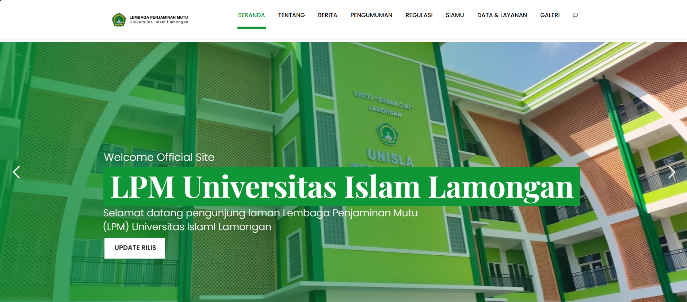
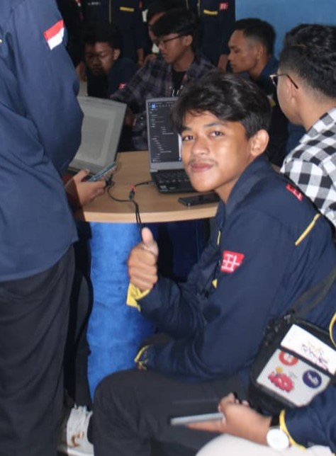
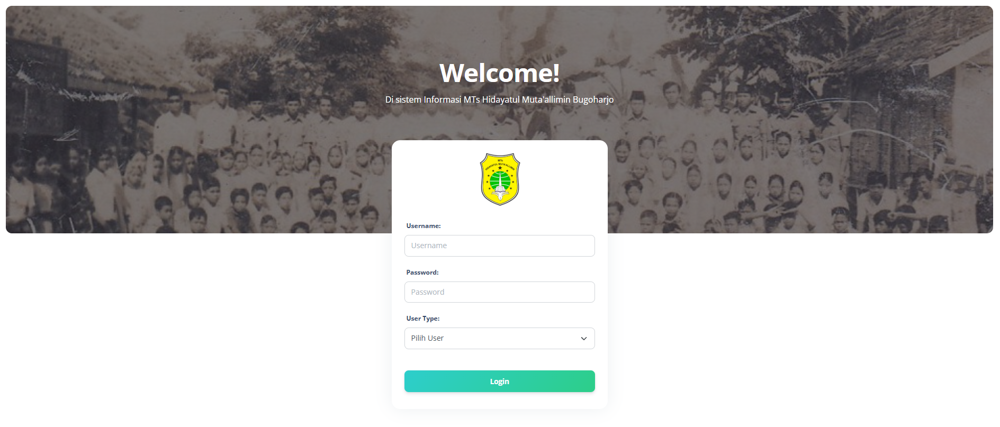
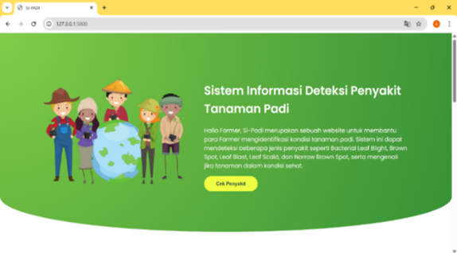

Website LPM UNISLA (WordPress)
Mengelola website resmi LPM Universitas Islam Lamongan: instalasi, konfigurasi tema & plugin, optimasi tampilan, dan publikasi konten.
Lulusan S1 Informatika Universitas Islam Lamongan dengan ketertarikan pada pengembangan aplikasi web dan dukungan teknis IT. Berpengalaman mengelola website institusi berbasis WordPress, membuat sistem audit mutu internal berbasis PHP, serta membangun antarmuka sederhana untuk model machine learning menggunakan Flask. Terbiasa menangani kebutuhan teknis, bekerja kolaboratif, dan berfokus pada solusi yang efisien serta mudah digunakan.


Mengelola website resmi LPM Universitas Islam Lamongan: instalasi, konfigurasi tema & plugin, optimasi tampilan, dan publikasi konten.

Sistem audit mutu berbasis PHP dengan fitur autentikasi, manajemen dokumen, verifikasi, dan laporan internal.

Desain front-end sistem presensi guru & siswa: login, input hadir, rekap CSV.

Web interface Flask untuk model ResNet50V2: upload citra daun, prediksi penyakit, dan confidence score.

Landing page untuk aplikasi deteksi overload, berisi dokumentasi singkat dan contoh hasil.